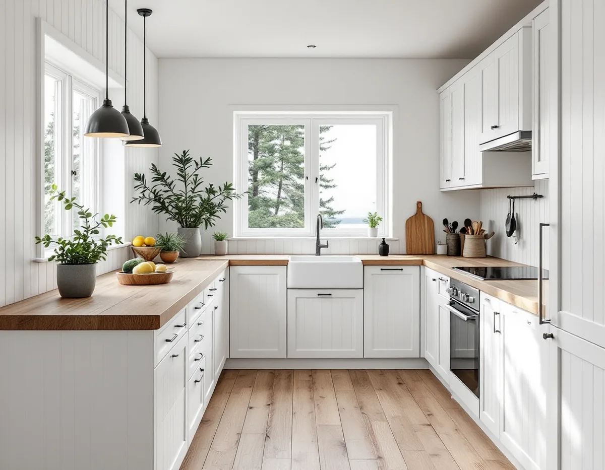
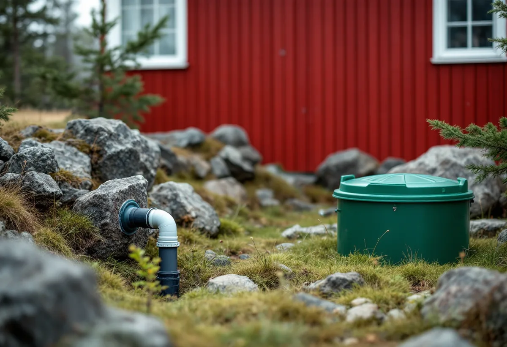

Besök på plats
Vi ser över köket, ledningarna, ventilationen och hur avloppet tar hand om diskvattnet.
På Värmdö har många kök byggts för sommarbruk och ska nu fungera året runt. Diskvattnet går ofta till en egen avloppsanläggning, och i flera områden är kommunalt vatten och avlopp på väg. Vi planerar köket efter de förutsättningarna, samordnar snickeri, el och VVS och börjar med ett gratis platsbesök och ett skriftligt kostnadsförslag.

Värmdö kommun har tusentals fastigheter i fritidshusområden där allt fler bor permanent, enligt broschyren Fritidshusområde i förändring. De områden som först ska anpassas för helårsboende kallas prioriterade förändringsområden. De pekas ut i översiktsplanen och får detaljplan och kommunalt vatten och avlopp.
Ett kök som byggdes för sommaren är ofta enkelt: en diskbänk mot ytterväggen, få eluttag och en ventil i stället för en fläkt. När huset ska användas hela året behövs fler uttag, en fungerande frånluft och ledningar som inte fryser. Vattenledningar i en kall yttervägg kan frysa.
Har huset byggts till i omgångar kan köket ligga i den äldsta och kallaste delen. Då är det ofta bättre att flytta det till en varmare del än att isolera om den gamla väggen. Var golvet i den nya delen ligger i förhållande till det gamla avgör också hur avloppet kan dras.
Elen är en annan sak att se över. Ett sommarhus har ofta få grupper i elcentralen, och en modern spis, ugn, diskmaskin och fläkt kräver mer. Skatteverket räknar det som rotarbete att installera och komplettera elcentraler, så elen kan moderniseras i samma entreprenad som köket.

Diskvatten räknas till bad-, disk- och tvättavlopp, BDT. Värmdö kommun skriver på sidan om ansökan och anmälan för små avlopp att en helt ny avloppsanläggning kräver tillstånd, oavsett om den är för WC, för WC och BDT eller enbart för BDT, och att man måste invänta kommunens skriftliga beslut innan arbetet börjar.
Tillstånd krävs också för att ansluta en eller flera byggnader till en befintlig anläggning. Flyttar köket till ett gästhus eller en ny byggnad på tomten är det alltså inte bara en VVS-fråga. Tillståndet gäller dessutom för exakt den lösning och placering som prövats.
När ett fritidshus används året runt ökar mängden diskvatten. Är du osäker på om anläggningen räcker, eller om det du planerar kräver tillstånd eller anmälan, kan du kontakta kommunen innan du ansöker. Badrummet påverkar samma anläggning, och därför planerar vi gärna båda rummen tillsammans.
I de prioriterade förändringsområdena byggs kommunalt vatten och avlopp ut i samband med detaljplanen. När fastigheten ska kopplas på är det ett bra tillfälle att se över ledningarna inne i huset och lägga köket där det passar bäst, i stället för där den gamla anläggningen styrde.
Planläggningen innebär ofta också att byggrätterna ses över, och många bygger till eller på. Då kan köket få plats i den nya delen, och ventilationen kan planeras från början med en kanal genom taket. Ska taket byggas om över en tillbyggnad, se takrenovering på Värmdö.
Kommunen påpekar på sidan om ändringarna i PBL att det är fastighetsägaren som ansvarar för att byggnationen följer lagens krav, även när åtgärden är lovfri.
Gustavsberg är riksintresse för kulturmiljövården. En antikvarisk konsekvensanalys från kommunen beskriver brukssamhället och det mönstersamhälle som Kooperativa Förbundet byggde, och Grindstugatan med bostadshus från 1870-talet, sadeltak och faluröd fjällpanel med vita knutar.
Värmdö kommun skriver att det gäller lovplikt inom riksintressen för kulturmiljövården och i kulturhistoriskt värdefulla områden, och kommunens kulturmiljökarta visar vilka fastigheter som berörs. Inne i köket är det sällan något som prövas, men en fläkthuv på fasaden, ett nytt fönster eller en ny dörr kan kräva lov.
I de äldre husen kan det finnas snickerier, dörrar och golv som är värda att spara när köket byts. Ska fasad eller fönster målas om, se målare på Värmdö.
Vi ser över köket, ledningarna, ventilationen och hur avloppet tar hand om diskvattnet.
Vi stämmer av om ändringen kräver tillstånd för avloppet eller lov för det som syns utifrån.
Du får ett förslag där rivning, installationer och montering står var för sig.
Gammal inredning tas bort, och vattenledningar flyttas från kalla väggar.
Stommen sätts upp, bänkskivan mäts in och vitvaror och fläkt installeras.
Vi provar allt och går igenom köket tillsammans med dig.
Skatteverket räknar ett fritidshus som småhus, men det ska användas som bostad. Rotavdrag ges bland annat för att montera fast köksinredning och installera vitvaror i samband med en omfattande renovering, att modernisera elen och byta vägguttag och att installera ventilation och imkanaler. Avdraget är 30 procent av arbetskostnaden, högst 50 000 kr per person och år och högst 75 000 kr tillsammans med rut.
Material och resor ger inget avdrag. Vi drar avdraget direkt på fakturan.
Om köket kan ligga kvar, om ledningar måste flyttas från kalla väggar, om avloppet behöver ett nytt tillstånd och om ventilationen ska göras om. Läge och åtkomst på ön påverkar också. Efter ett gratis platsbesök får du ett skriftligt kostnadsförslag.
Planering, el, VVS, fläkt och väggar.
Köksrenovering i Stockholm →Takbyte, takbesiktning och plåtarbeten.
Takläggare på Värmdö →Skärgård, vind och fritidshus.
Takrenovering på Värmdö →Fritidsområden, kulturmiljö och avlopp.
Attefallshus på Värmdö →Brunnsvatten, salt och eget avlopp.
Badrumsrenovering på Värmdö →Byggrätt, PFO-områden och strandskydd.
Byggföretag på Värmdö →Röd panel, vita snickerier och båthus i skärgårdsbyarna.
Fasadmålning på Värmdö →Sommarvillor, skyddade hus och helårsboende.
Fasadrenovering på Värmdö →Gustavsbergs bevarandevärda fönster.
Fönsterbyte på Värmdö →Glasverandor och äldre fönster.
Fönsterrenovering på Värmdö →Fritidshus som blir permanentbostäder.
Golvläggare på Värmdö →Gamla brädgolv och skonsam slipning.
Golvslipning på Värmdö →Skärgårdshus, fritidshus och bruksmiljö på Värmdö.
Målare på Värmdö →Plåttak och beslag på Värmdö.
Plåtslagare på Värmdö →Fritidshus som blir helårshus.
Snickare på Värmdö →Anmälan, kulturmiljö och tak i skärgårdsbyarna.
Takbyte på Värmdö →Riva eller spara tapetlagren.
Tapetsering på Värmdö →Fritidshusplaner och lovfria 30 m².
Tillbyggnad på Värmdö →VVS, varmvattnet och byggreglerna.
Totalrenovering på Värmdö →